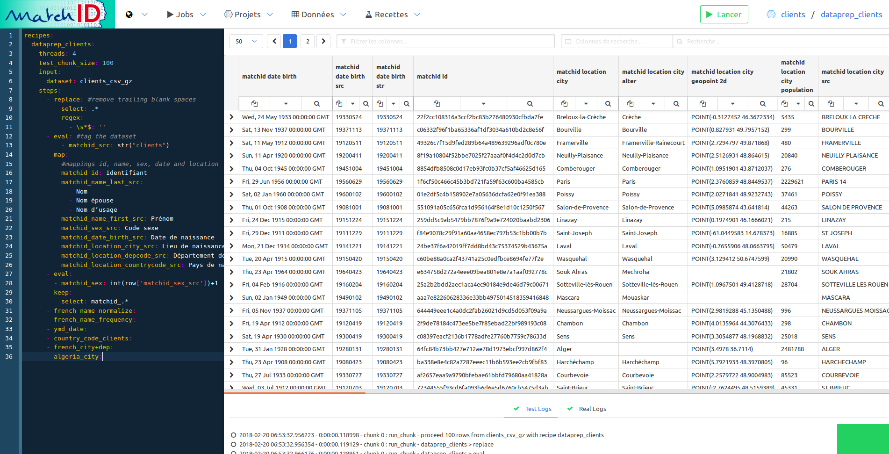

République
Française
<h1> traitements d'identités </h1> <span class="rf-text--lead">qualité, indexation, appariement</span><br> <span class="rf-text">matchID, octobre 2020</span><br>
# Les données d'identité
### patrimoine de données au ministère de l'Intérieur <br>
## descripteurs <div class="rf-container rf-text rf-text--left"> <div class="rf-grid-row rf-grid-row--gutters"> <div class="rf-col-xs-4 rf-col-xl-3"> <article class="rf-padding-1N rf-padding-left-2N-xl rf-scheme-soft-blue-dark"> <strong>identité pivot</strong><br> - nom<br> - prénom<br> - lieu<br> - date de naissance </article> </div> <div class="rf-col-xs-4 rf-col-xl-3"> <article class="rf-padding-1N rf-padding-left-2N-xl rf-scheme-soft-orange-dark"> <strong>filiation</strong><br> - père<br> - mère<br> - enfants<br> - fratrie...<br> </article> </div> <div class="rf-col-xs-4 rf-col-xl-3"> <article class="rf-padding-1N rf-padding-left-2N-xl rf-scheme-soft-brown"> <strong>biométrie</strong><br> - taille, yeux...<br> - photo<br> - empreinte<br> - iris, adn </article> </div> <div class="rf-col-xs-6 rf-col-xl-3"> <article class="rf-padding-1N rf-padding-left-2N-xl rf-scheme-soft-pink-dark"> <strong>n° identifiants</strong><br> - NIR<br> - carte ID<br> - fiscal<br> - permis... </article> </div> <div class="rf-col-xs-6 rf-col-xl-4"> <article class="rf-padding-1N rf-padding-left-2N-xl rf-scheme-soft-purple"> <strong>coordonnées</strong><br> - mail<br> - adresse<br> - téléphone<br> - IP, IBAN...<br> </article> </div> <div class="rf-col-xs-6 rf-col-xl-4"> <article class="rf-padding-1N rf-padding-left-2N-xl rf-scheme-soft-blue-soft"> <strong>identité numérique</strong><br> - france connect<br> - facebook, google, ... </article> </div> <div class="rf-col-xs-6 rf-col-xl-4"> <article class="rf-padding-1N rf-padding-left-2N-xl rf-scheme-soft-green-warm"> <strong>donnée métier</strong><br> - style d'écriture (auteur)<br> - mode opératoire (contrevenant) ...<br> </article> </div> </div> </div> <div class="rf-hide-mobile-background"></div>
## volumes <div class="rf-container rf-text rf-text--left"> <div class="rf-grid-row"> <div class="rf-col-xs-12 rf-col-xl-4"> <table class="rf-table rf-table--striped"> <tr><td>état civil/RNIPP:</td><td>67 M</td> </tr> <tr><td> répertoire électoral unique </td><td> 48M </td></tr> <tr><td> personnes décédées </td><td> 25 M </td></tr> <tr><td> carte d'identité </td><td> 80 M </td></tr> <tr><td> passeport </td><td> ~ 15 M </td></tr> <tr><td> France Connect </td><td> ~ 16 M </td></tr> <tr><td> identités fiscales </td><td> ~ 70 M </td></tr> <tr><td> apprentis </td><td> ~ 10M </td></tr> </table> </div> <div class="rf-col-xs-12 rf-col-xl-4"> <table class="rf-table rf-table--striped"> <tr><td> permis de conduire </td><td> ~ 50 M </td></tr> <tr><td> titulaire de véhicule </td><td> ~ 40 M </td></tr> <tr><td> possesseurs d'arme </td><td> ~ 1 M </td></tr> <tr><td> visa </td><td> ~ 2M / an </td></tr> <tr><td> titre de séjour </td><td> 4,8M </td></tr> <tr><td> personnes recherchées </td><td> ~ 20 k </td></tr> </table> </div> <div class="rf-col-xs-12 rf-col-xl-4"> <table class="rf-table rf-table--striped"> <tr><td> casier judiciaire </td><td> 550k/an </td></tr> <tr><td> fijaisv </td><td> 78k </td></tr> <tr><td> condamnés </td><td> 245k/an </td></tr> <tr><td> détenus (écrou) </td><td> 80k </td></tr> <tr><td> mineurs condamnés </td><td> 15k/an </td></tr> </table> </div> </div> </div> <div class="rf-hide-mobile-background"></div>
## qualité <ul class="rf-text--lead"> <li>doublons</li> <li>ambiguité<br> <small>origines - e.g Payet, Lefevre, N Guyen, Diallo ...</small> </li> <li>champs particuliers<br> <small>droit : pas de code NIR, pas de lieu de naissance, ...</small> </li> <li>process métier<br> <small>e.g date naissance titulaire véhicule = concessionnaire</small></li> <li>criticité de l'identité<br> <small>titres biométriques vs alias Snapchat)</small></li> </ul>
# cas d'usages identité
## problèmes à résoudre - <del>identification, authentification</del> - optimisation APIs <small>chaînes métiers: verbalisation</small> - fiabilisation statistique <small>jeunes accidentés, apprentis</small> - qualité d'un fichier <small>par croisement: décédés au permis, et doublons: armes</small> - recherche/criblage <small> recherche antécédants / personne recherchée </small> - fraude <small>immatriculation, fiscale, blanchiment</small>
<br> <h2>taux d'appariement</h2> <div class="rf-container rf-text--lead" > <div class="rf-grid-row rf-grid-row--gutters"> <div class="rf-col-12">entre deux fichiers d'états civils complets</div> <div class="rf-col-xs-5 rf-col-xl-3"><span class="rf-btn"> 30%-60% </span></div> <div class="rf-col-xs-7 rf-col-xl-9 rf-text--left"><span>appariements exacts <small>(au tiret près, accents normalisés)</small></span></div> <div class="rf-col-xs-5 rf-col-xl-3"><span class="rf-btn rf-btn--secondary"> 50%-80% </span></div> <div class="rf-col-xs-7 rf-col-xl-9 rf-text--left"><span >tolérance faible <small>(premier prénom, normalisation commune)</small></span></div> <div class="rf-col-xs-5 rf-col-xl-3"><span class="rf-btn rf" style="background-color: var(--rm500)"> 90%-98% </span></div> <div class="rf-col-xs-7 rf-col-xl-9 rf-text--left"><span >appariement avancé <small>(flou, machine learning)</small></span></div> <div class="rf-col-12"><i class="fas fa-arrow-circle-right"></i> attention aux métriques (rappel, précision)</div> </div> </div>
## méthode - <span class="rf-text--lead">fiabilité identifiants techniques</span> - dédoublonnage - évaluer la qualité des champs - mettre en qualité les sources et process - commencer avec des appariements simples (SQL tolérance faible) - au plus proche de la donnée - évaluer (métrique & annotation) - ... y/c les biais </small>
## métriques métier <br> <div class="rf-text--lead"> coût d'un manqué<br> <small>vs</small><br> coût d'un faux positif<br><br> <i class="fas fa-arrows-alt-v"></i><br><br> manquer un terroriste aux frontières<br> <small>vs</small><br> temps d'attente aux frontière </div>
<br> <h2>métriques techniques</h2> <div class="rf-container"> <div class="rf-grid-row rf-grid-row--gutters"> <div class="rf-col-xs-12 rf-col-xl-6"> <ul> <li> métriques F1-score, rappel </li> <li> taux de doublons </li> <li> taux de données dégradées <small>(champ partiellement manquant)</small></li> </ul> </div> <div class="rf-col-xs-12 rf-col-xl-6"> <img width="600" src="custom/img/roc.png"><br> </div> </div> </div>
# traiter les cas d'usage identité avec <br>
<h2>a qui s'adresse matchID</h2> <div class="rf-container"> <div class="rf-grid-row rf-grid-row--gutters"> <div class="rf-col-xs-12 rf-col-xl-4"> <div class="rf-tile"> <div class="rf-tile__body"> <h4 class="rf-title_title"> les métiers </h4> <p class="rf-title__desc"> devant mettre en qualité des fichiers de plusieurs millions d'identités </p> </div> </div> </div> <div class="rf-col-xs-12 rf-col-xl-4"> <div class="rf-tile"> <div class="rf-tile__body"> <h4 class="rf-title_title"> les datascientists </h4> <p class="rf-title__desc"> ayant besoin de rigueur dans l'évaluation d'alogorithmes d'appariement </p> </div> </div> </div> <div class="rf-col-xs-12 rf-col-xl-4"> <div class="rf-tile"> <div class="rf-tile__body"> <h4 class="rf-title_title"> les services numériques </h4> <p class="rf-title__desc"> ayant besoin d'industrialiser des algorithmes en utilisant des API </p> </div> </div> </div> </div> </div> </div>
## apports matchID <div class="rf-container" style="margin-top: -16px;"> <div class="rf-grid-row"> <div class="rf-col-xs-12 rf-col-xl-6"> <strong class="rf-text--lead">accélération des études</strong><br> <ul class="rf-text"> <li>outil d'évaluation</li> <ul class="rf-text--sm"> <li>visualisation de résultats d'appariement</li> <li>annotation</li> <li>courbes de résultats</li> </ul> <li> outil de développement </li> <ul class="rf-text--sm"> <li> capitalisation en "recettes" </li> <li> données de références intégrées </li> <li> parallélisation et gros volumes </li> </ul> <li> technologies </li> <ul class="rf-text--sm"> <li>Python/Pandas/scikit</li> <li>SQL</li> <li>Elastiscearch</li> </ul> </ul> </div> <div class="rf-col-xs-12 rf-col-xl-6"> <strong class="rf-text--lead">production</strong><br> <ul class="rf-text"> <li> API-full</li> <ul class="rf-text--sm"> <li>exposition de l'algorithme (bulk/unitaire)</li> <li>chargement de données</li> <li>orchestration des traitements</li> <li>monitoring</li> </ul> <li> compatibilité (Python, any-SQL, ...) </li> <li> installabilité (CaaS-ready) </li> <li> scalabilité </li> </ul> </div> </div> </div> <div class="rf-hide-mobile-background"></div>
<br> <h2> s'organiser</h2> <div class="rf-container rf-margin-top-2N" style="margin-top: -16px;"> <div class="rf-grid-row"> <div class="rf-col-xs-12 rf-col-xl-6"> <strong class="rf-text--lead">étude</strong> <span class="rf-text--sm">(5-20jh)</span><br> <ul class="rf-text--sm"> <li>préciser le cas d'usage</li> <li>obtenir des données réelles (au moins 10k x 10k)</li> <li>disposer de IaaS ou d'infrastructures</li> <li>comprendre les données</li> <li>assembler les algorithme</li> <li>annoter au moins 1000 cas</li> <li>évaluer, itérer, partager</li> <li>cadrer les métriques</li> <li>restituer, décider</li> </ul> </div> <div class="rf-col-xs-12 rf-col-xl-6"> <strong class="rf-text--lead">production</strong> <span class="rf-text--sm">(50-200jh)</span><br> <ul class="rf-text--sm"> <li> piloter le chantier </li> <li> mettre en place les moyens</li> <li> cadre RGPD </li> <li> formaliser les métriques retenues </li> <li> mettre en qualité ce qui peut l'être en amont </li> <li> formaliser les interfaces </li> <li> optimiser les traitements </li> </ul> </div> </div> </div> <div class="rf-hide-mobile-background"></div>
## cas d'usage traités <div class="rf-container"> <div class="rf-grid-row rf-grid-row--gutters"> <div class="rf-col-xs-4 rf-col-xl-3"> <div class="rf-tile"> <div class="rf-tile__body"> <h4 class="rf-title_title rf-text--sm"> décédés x SNPC </h4> <p class="rf-title__desc rf-text--xs"> radiation des décédés <br> au permis de conduire<br> qualité, fraude<br> </p> </div> </div> </div> <div class="rf-col-xs-4 rf-col-xl-3"> <div class="rf-tile"> <div class="rf-tile__body"> <h4 class="rf-title_title rf-text--sm"> décédés x SIV </h4> <p class="rf-tile__desc rf-text--xs"> immatriculations<br> études fraude<br> suppressions ponctuelle et mensuelles<br> </p> </div> </div> </div> <div class="rf-col-xs-4 rf-col-xl-3"> <div class="rf-tile"> <div class="rf-tile__body"> <h4 class="rf-title_title rf-text--sm"> AGRIPPA </h4> <p class="rf-tile__desc rf-text--xs"> armes<br> qualité, décédés, doublons<br> 1-shot ok, récurrent en cours<br> </p> </div> </div> </div> <div class="rf-col-xs-4 rf-col-xl-3"> <div class="rf-tile"> <div class="rf-tile__body"> <h4 class="rf-title_title rf-text--sm"> jeunes accidentés </h4> <p class="rf-tile__desc rf-text--xs"> pb qualité de donnée<br> croisement SNPC<br> fiabilisation des statistique<br> </p> </div> </div> </div> <div class="rf-col-xs-4 rf-col-xl-3"> <div class="rf-tile"> <div class="rf-tile__body"> <h4 class="rf-title_title rf-text--sm"> SIRH </h4> <p class="rf-tile__desc rf-text--xs"> analyse qualité des saisies<br> doublons, décès<br> </p> </div> </div> </div> <div class="rf-col-xs-4 rf-col-xl-3"> <div class="rf-tile"> <div class="rf-tile__body"> <h4 class="rf-title_title rf-text--sm"> Coopération fiscale </h4> <p class="rf-tile__desc rf-text--xs"> DGFIP<br> 2 ans de fiabilisation<br> 90% d'appariement<br> <span class="rf-hide--mobile">industrialisation hors matchID</span> </p> </div> </div> </div> <div class="rf-col-xs-6 rf-col-xl-3"> <div class="rf-tile"> <div class="rf-tile__body"> <h4 class="rf-title_title rf-text--sm"> Apprentis </h4> <p class="rf-tile__desc rf-text--xs"> Education nationale, DEPP<br> fiabilisation statistique<br> étude, annotation<br> <span class="rf-hide--mobile">industrialisation hors matchID</span> </p> </div> </div> </div> <div class="rf-col-xs-6 rf-col-xl-3"> <div class="rf-tile"> <div class="rf-tile__body"> <h4 class="rf-title_title rf-text--sm"> deces.matchid.io </h4> <p class="rf-tile__desc rf-text--xs"> R&D et data prep matchid <br> Recherche simple<br> Recherche experte (généalogistes)<br> Appariements de masse (hopitaux) hors matchID<br> </p> </div> </div> </div> </div> </div> <div class="rf-hide-mobile-background"></div>
## annoter avec matchID
<img style="max-width: 100%; margin-left:0px; margin-top: 0px;" src="custom/img/matchid-frontend-validation.png">
<iframe class="rf-iframe--full" src="https://tuto.matchid.io/matchID/projects/tuto1/datasets/clients_x_deaths/validation" allowfullscreen </iframe> </iframe>
## développer avec matchID

<iframe class="rf-iframe--full" src="https://tuto.matchid.io/matchID/projects/deces-dataprep/recipes/deces_dataprep" allowfullscreen </iframe> </iframe>
## banque d'algorithmes <div class="rf-container"> <div class="rf-grid-row rf-grid-row--gutters"> <div class="rf-col-xs-6 rf-col-xl-3"> <div class="rf-tile"> <div class="rf-tile__body"> <h4 class="rf-title_title rf-text--sm"> normalisation NFD </h4> <p class="rf-title__desc rf-text--xs"> désaccentution<br> Gräbener => Grabener<br> variante : translittération<br> es, pg, pandas, ..<br> </p> </div> </div> </div> <div class="rf-col-xs-6 rf-col-xl-3"> <div class="rf-tile"> <div class="rf-tile__body"> <h4 class="rf-title_title rf-text--sm"> indexation phonétique </h4> <p class="rf-title__desc rf-text--xs"> variantes translittérées<br> sherazat => shéhérazade <br> petit volume (bruit)<br> es, pg, …<br> </p> </div> </div> </div> <div class="rf-col-xs-6 rf-col-xl-3"> <div class="rf-tile"> <div class="rf-tile__body"> <h4 class="rf-title_title rf-text--sm"> indexation Levenshtein </h4> <p class="rf-tile__desc rf-text--xs"> fautes de frappe limitées<br> tristram <=> tristan<br> variante : translittération<br> es, solr, pandas inmemory<br> </p> </div> </div> </div> <div class="rf-col-xs-6 rf-col-xl-3"> <div class="rf-tile"> <div class="rf-tile__body"> <h4 class="rf-title_title rf-text--sm"> scoring Levenshtein </h4> <p class="rf-tile__desc rf-text--xs"> fautes de frappe avancées<br> sherazat => shéhérazade <br> petit volume (coûteux)<br> pandas, es, pg<br> </p> </div> </div> </div> <div class="rf-col-xs-6 rf-col-xl-3"> <div class="rf-tile"> <div class="rf-tile__body"> <h4 class="rf-title_title rf-text--sm"> indexation q-gram </h4> <p class="rf-tile__desc rf-text--xs"> ordre indifférent, adresses<br> 3 bd garibaldi<br> petit volume (bruit)<br> pandas, es, pg<br> </p> </div> </div> </div> <div class="rf-col-xs-6 rf-col-xl-3"> <div class="rf-tile"> <div class="rf-tile__body"> <h4 class="rf-title_title rf-text--sm"> scoring géographique </h4> <p class="rf-tile__desc rf-text--xs"> distance km<br> historique commune<br> Levenshtein<br> </p> </div> </div> </div> <div class="rf-col-xs-6 rf-col-xl-3"> <div class="rf-tile"> <div class="rf-tile__body"> <h4 class="rf-title_title rf-text--sm"> scoring phonétique </h4> <p class="rf-tile__desc rf-text--xs"> discrimination phonétique<br> marine ≠ karine <br> pd: soundex, ... </p> </div> </div> </div> <div class="rf-col-xs-6 rf-col-xl-3"> <div class="rf-tile"> <div class="rf-tile__body"> <h4 class="rf-title_title rf-text--sm"> machine learning </h4> <p class="rf-tile__desc rf-text--xs"> Scikit learn<br> si très haute précision visée<br> et moyens humains d'annotation<br> </p> </div> </div> </div> </div> </div> <div class="rf-hide-mobile-background"></div>
## données de référence <div class="rf-container"> <div class="rf-grid-row rf-grid-row--gutters"> <div class="rf-col-xs-6 rf-col-xl-4"> <div class="rf-tile"> <div class="rf-tile__body"> <h4 class="rf-title_title rf-text--sm"> communes INSEE </h4> <p class="rf-title__desc rf-text--xs"> historique fusions<br> 98% rectification<br> population, gps </p> </div> </div> </div> <div class="rf-col-xs-6 rf-col-xl-4"> <div class="rf-tile"> <div class="rf-tile__body"> <h4 class="rf-title_title rf-text--sm"> pays INSEE </h4> <p class="rf-title__desc rf-text--xs"> normalisation<br> historique<br> gps<br> </p> </div> </div> </div> <div class="rf-col-xs-6 rf-col-xl-4"> <div class="rf-tile"> <div class="rf-tile__body"> <h4 class="rf-title_title rf-text--sm"> statistiques noms </h4> <p class="rf-tile__desc rf-text--xs"> données du permis de conduire </p> </div> </div> </div> <div class="rf-col-xs-6 rf-col-xl-6"> <div class="rf-tile"> <div class="rf-tile__body"> <h4 class="rf-title_title rf-text--sm"> prénoms composés </h4> <p class="rf-tile__desc rf-text--xs"> données du permis de conduire </p> </div> </div> </div> <div class="rf-col-xs-12 rf-col-xl-6"> <div class="rf-tile"> <div class="rf-tile__body"> <h4 class="rf-title_title rf-text--sm"> nom x prenom </h4> <p class="rf-tile__desc rf-text--xs"> fréquences noms+prénoms<br> ambiguité<br> à venir<br> </p> </div> </div> </div> </div> </div> <div class="rf-hide-mobile-background"></div>
<div class="rf-text--lead"> documentation et tutoriel sur <a href="https://matchid.io/">matchid.io</a> </div>
<iframe class="rf-iframe--full" src="https://matchid-project.github.io/" allowfullscreen </iframe> </iframe>
## deces.matchid.io <div class="rf-text">moteur de recherche des personnes décédées</div> <div style="overflow: hidden;"> <iframe scrolling="no" style="margin-top: -200px;" class="rf-iframe--small rf-iframe--no-header" src="https://deces.matchid.io/search" allowfullscreen </iframe> </iframe> </div>
<div class="rf-container"> <div class="rf-grid-row rf-grid-row--gutters"> <div class="rf-col-md-12 rf-col-xl-6"> <h2>pour qui</h2> <div class="rf-container-fluid"> <div class="rf-grid-row rf-grid-row--gutters"> <div class="rf-col-6"> <div class="rf-tile"> <div class="rf-tile__body"> <h4 class="rf-title_title"> les particuliers </h4> <p class="rf-title__desc"> les familles<br> les généalogistes<br> </p> </div> </div> </div> <div class="rf-col-6"> <div class="rf-tile"> <div class="rf-tile__body"> <h4 class="rf-title_title"> les professionnels </h4> <p class="rf-title__desc"> associations médecins, hôpitaux préfectures, police </p> </div> </div> </div> </div> </div> </div> <div class="rf-col-md-12 rf-col-xl-6"> <h2> pour quoi ? </h2> <div class="rf-container-fluid"> <div class="rf-grid-row"> <div class="rf-col-6"> <div class="rf-tile"> <div class="rf-tile__body"> <h4 class="rf-title_title"> recherche libre </h4> <p class="rf-title__desc"> simple avancée géographique </p> </div> </div> </div> <div class="rf-col-6"> <div class="rf-tile"> <div class="rf-tile__body"> <h4 class="rf-title_title"> appariement </h4> <p class="rf-title__desc"> droit à l'oubli / RGPD fiabilisation fichiers études scientifiques </p> </div> </div> </div> </div> </div> </div> </div> </div>
## Recherche avancée </div> <div style="overflow:hidden"> <iframe scrolling="no" class="rf-iframe rf-iframe--no-header" src="https://deces.matchid.io/search?advanced=true&ln=pompidou&fn=georges&view=card-expand" allowfullscreen </iframe> </iframe> </div> <div class="rf-hide-mobile-background"></div>
## Recherche géographique <div style="overflow:hidden"> <iframe scrolling="no" style="margin-top:-330px;height:1000px" class="rf-iframe--small" src="https://deces.matchid.io/search?q=pompidou&fuzzy=false&view=geo" allowfullscreen </iframe> </iframe> </div> <div class="rf-hide-mobile-background"></div>
## Appariement <img src="custom/img/deces-appariement.png"><br>
## Pourquoi deces.matchid.io ? <br> <div class="rf-container"> <div class="rf-grid-row rf-grid-row--gutters"> <div class="rf-col-xs-12 rf-col-xl-6"> <div class="rf-tile"> <div class="rf-tile__body"> <span class="rf-logo rf-logo--lg rf-text--left" title="République Française"> <span class="rf-logo__title"> Ministère<br>de l'Intérieur </span> </span> <h4 class="rf-tile__title">début 2017...</h4> <p class="rf-title__desc"> au "MI", le projet matchID réalise en POC un moteur de recherche des décès avec le fichier INSEE, alors en accès restreint </p> </div> </div> </div> <div class="rf-col-xs-12 rf-col-xl-6"> <div class="rf-tile"> <div class="rf-tile__body"> <img height="100px" width="100px" style="margin: 14px;border : 0;box-shadow: none;" data-src="custom/img/logo_insee.svg" alt="logo Insee"> <h4 class="rf-tile__title">... fin 2019</h4> <p class="rf-tile__desc"> sur demande de la CADA, l'INSEE publie l'ensemble des 25 millions d'enregistrements de décès depuis 1970 <a href="https://www.data.gouv.fr/fr/datasets/fichier-des-personnes-decedees/)">data.gouv</a> </p> </div> </div> </div> </div> </div> <div class="rf-hide-mobile-background"></div>
## comment est utilisé matchID
### Dataprep avec matchID <ul class="rf-text--sm"> Les traitements sont pensés faciliter la recherche par indexation: <li>les données sont normalisées en ascii (il y a quelques erreurs d'encodage dans les fichiers INSEE</li> <li>le libellé de commune de décès (ou pays) est récupéré via le référentiel INSEE</li> <li>idem pour le pays de naissance et de décès</li> <li>l'historique de commune est utilisée pour les variantes de libellés de communes</li> </ul> <a class="higher-24" target="_blank" href="https://tuto.matchid.io/matchID/projects/deces-dataprep/recipes/deces_dataprep"> </a> <br>
### Indexation Elasticsearch <ul class="rf-text--sm"> L'indexation Elasticsearch est une opération peu intuitive: <li>matchID facilite l'indexation avec l'automatisation de la création du mapping</li> <li>plusieurs colonnes avec des indexations différenciées sont créées</li> <li>l'indexation floue "auto" est utilisée (distance de Levensthein à 2 pour les noms longs, <br>1 pour les noms courts, 0 pour les très courts</li> <li>la date de naissance et de décès sont également accessibles en recherche floue</li> </ul> <a target="_blank" href="https://tuto.matchid.io/matchID/projects/deces-dataprep/datasets/deces_index"> </a>